00이 매뉴얼에 대하여
만민 법규 검토 요약(MANMIN LEGAL REVIEW)은 건축사 김만민이 매월 첫째 화요일에 직전 달의 건축 · 구조 · 기계설비 · 소방 · 토목 관련 법령 개정사항을 정리해 발간하는 정기 월간 웹 간행물입니다. 이 매뉴얼은 간행물의 발간 체계와 수록 기준, 화면 사용법, 항목을 읽고 실무에 쓰는 방법을 설명합니다.
| 항목 | 내용 |
|---|---|
| 간행물 | 만민 법규 검토 요약 · MANMIN VER-1.0 · 월간 (매월 첫째 화요일) |
| 접속 주소 | manminkim-eng.github.io/manmin-law |
| 최신호 | 2026년 9월호 · 발간 2026-10-06 · 46건 |
| 누적 | 5개호 · 177건 (2026년 5월호 ~ 2026년 9월호) |
| 매뉴얼 판 | Ver-1.0 (초판) · 2026-10-17 · 작성 김만민 건축사(㈜대성건축사사무소) |
| 내려받기 | PDF(A4) · 간행물 열기 |
| 화면 캡처 기준 | 2026-10-17 — 화면의 D-day · 「종료」 표시는 보는 날짜에 따라 달라집니다 |
01월간 발간 안내
한 달 동안 나온 법령 변화를 그달이 끝난 뒤 한 번에 정리합니다. 달이 끝나야 그달의 공포 · 예고 · 발의가 모두 확정되기 때문입니다.
발간일 · 수록 기간
| 항목 | 내용 |
|---|---|
| 발간일 | 매월 첫째 화요일 |
| 수록 기간 | 직전 달 1일 ~ 말일 (예: 11월 첫째 화요일 → 10월호) |
| 발간 단위 | 월호(YYYY-MM) — 예: 2026-09 = 2026년 9월호 |
| 수정 | 발간 뒤 누락이 확인되면 다음 호 「추가검토」로 보완 수록합니다 (예: 9월호에 7월 누락분 1건) |
발간 일정
함께 보는 매체
| 매체 | 주소 | 역할 |
|---|---|---|
| 웹 간행물 | manminkim-eng.github.io/manmin-law | 원본 — 원문 연결 · D-day · 검색 · 인쇄 |
| 네이버 블로그 | blog.naver.com/manmin72 | 월호 원고 (웹의 「블로그 원고」로 추출) |
| 유튜브 | @김만민-x8p | 월호 해설 영상 · 쇼츠 |
| MANMIN 계산도구 | manminkim-eng.github.io/KIMMANMIN | 같은 분야의 엔지니어링 웹 계산도구 모음 |
02수록 기준
법령이 만들어지는 길목을 6단계로 나누어 매달 모두 훑습니다. 한 단계라도 수집이 빠지면 그 호는 발간하지 않습니다. 해당 단계에 실적이 없으면 「0건」으로 기록합니다.
6단계 수집
국민참여입법센터
국민참여입법센터
열린국회정보
열린국회정보
국가법령정보센터
국가법령정보센터
| 단계 | 대상 | 출처 | 실무 의미 |
|---|---|---|---|
| 시행법령 | 법률 · 시행령 · 시행규칙의 공포 · 시행 확정분 | 국가법령정보센터 (부칙 대조) | 이미 정해졌다 — 시행일부터 적용 |
| 훈령예규고시 | 고시 · 훈령 · 예규 발령분 | 국가법령정보센터 행정규칙 | 운영기준 · 세부기준이 바뀐다 |
| 국회통과 | 본회의 의결 법률안 | 열린국회정보 | 곧 공포된다 — 다음 호 「시행법령」 후보 |
| 입법예고 | 정부 법령안 입법예고 | 국민참여입법센터 | 아직 안 · 마감 전 의견 제출 가능 |
| 행정예고 | 고시 · 지침 행정예고 | 국민참여입법센터 | 아직 안 · 마감 전 의견 제출 가능 |
| 의원발의 | 국회의원 발의 법률안 | 열린국회정보 | 방향 참고 — 확정이 아니다 |
| 추가검토 | 지난 호 누락분 · 관련 정책 묶음 | 위 출처 동일 | 보완 수록 |
분야 · 대상 법령
각 항목에는 분야 태그가 붙습니다 — 건축 · 구조 · 기계설비 · 소방 · 토목 · 전기 · 도시계획 · 안전진단 · 환경. 수집 대상은 실무 관련 법령명 53개를 명시한 목록(화이트리스트)으로 정하고, 이름이 비슷해 잘못 걸리는 법령 15개는 제외 목록으로 끊습니다(예: 「전기통신」 · 「기초연금」 · 「도로교통법」). 농지법은 설계 · 감리 실무 대상이 아니어서 의도적으로 수집하지 않습니다(2026-09-01 결정).
| 목록 | 규모 | 쓰임 |
|---|---|---|
| 시행법령 감시목록 | 36건 | 매월 공포 · 시행 여부를 법령명으로 개별 조회 · 부칙 대조 (전수 스캔 아님) |
| 훈령 · 예규 · 고시 감시목록 | 14건 | 매월 발령 여부를 명칭으로 개별 조회 (전수 스캔 아님) |
| 법령명 화이트리스트 | 53개 | 예고 · 발의 자동 수집 대상 |
| 제외 목록 | 15개 + 농지법 | 오탐 차단 · 범위 밖 |
확인 방법
- 공포 · 시행 확정분은 법령 번호와 공포일 · 시행일을 국가법령정보센터 연혁 · 부칙과 대조합니다. 같은 날 여러 개정이 겹치면 현행 화면에는 나중 시행분만 보이므로 연혁으로 확인합니다(예: 9월호 국토계획법 시행령 대통령령 제36656호 — 9.18. 시행 타법개정 제36587호가 현행 머리에 표시됨).
- 「제안이유 및 주요내용」은 정부 · 발의자가 밝힌 공식 사유를 그대로 옮깁니다. 편집자의 해석은 「실무 영향」에만 씁니다.
- 발간 전 자동 점검(
publish.py check)이 제안이유가 빈 항목, 수집 실패 단계, 발간일 규칙 위반을 찾아 발간을 막습니다.
03화면 안내
첫 화면(index)은 지금 챙겨야 할 일정과 월별 아카이브를, 월호 페이지(YYYY-MM)는 그달의 전체 항목을 보여 줍니다.
첫 화면
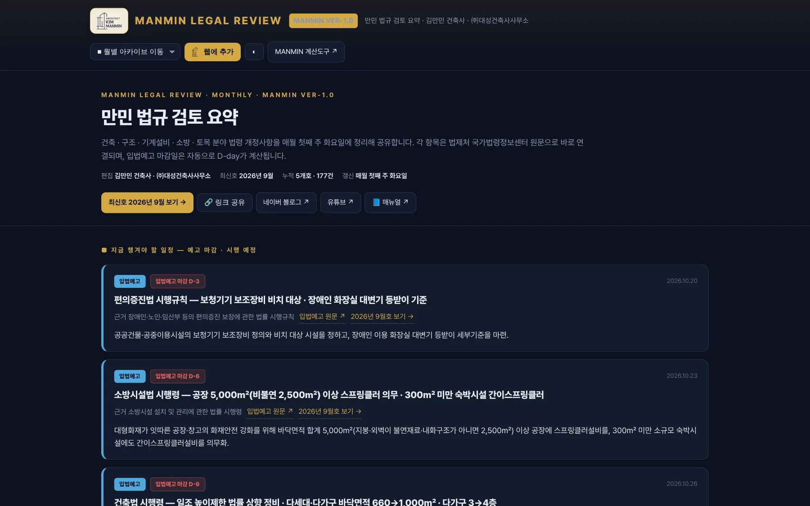
123456789- 1사이트 이름 · Ver-1.0
- 2월별 아카이브 이동
- 3웹에 추가
- 4밝게 · 어둡게
- 5만민 법규 검토 요약
- 6편집 · 최신호 · 누적 · 갱신
- 7최신호 보기
- 8유튜브
- 9📘 매뉴얼
- 1최신호 보기
- 2링크 공유
- 3네이버 블로그
- 4유튜브
- 5📘 매뉴얼 — 이 문서
| 단추 | 기능 |
|---|---|
| 최신호 보기 | 가장 최근 월호로 이동 |
| 링크 공유 | 공유 기능이 있는 기기(휴대전화 등)는 공유 창, 없으면 주소 복사 |
| 네이버 블로그 · 유튜브 | 같은 내용의 블로그 원고 · 해설 영상 채널 |
| 📘 매뉴얼 | 이 매뉴얼 (새 창) |
| 월별 아카이브 이동 | 머리 막대 목록에서 원하는 호로 바로 이동 |
| 웹에 추가 · ◐ | 앱으로 설치 · 밝게/어둡게 전환 |
지금 챙겨야 할 일정
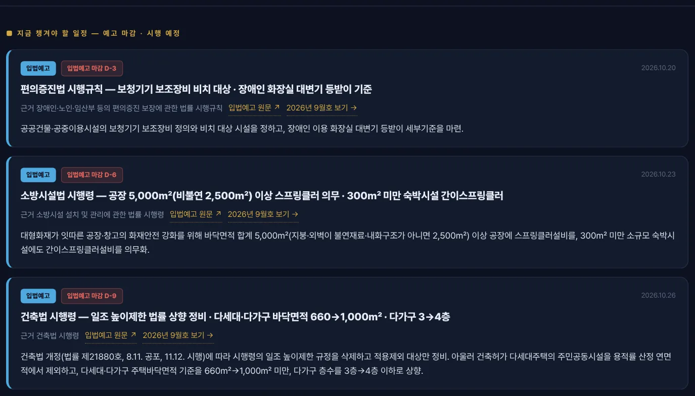
12345- 1지금 챙겨야 할 일정
- 2단계
- 3마감 D-day
- 4마감 · 시행일
- 5근거 · 원문 · 해당 호
모든 호의 입법예고 · 행정예고 마감일과 앞으로 시행될 항목을 모아 가까운 날짜부터 보여 줍니다. 목록은 발간 때 정해지고, D-day 표시만 보는 날 기준으로 다시 계산됩니다. 제목을 누르면 해당 월호로, 「원문 ↗」은 입법예고 원문으로 갑니다.
월별 아카이브
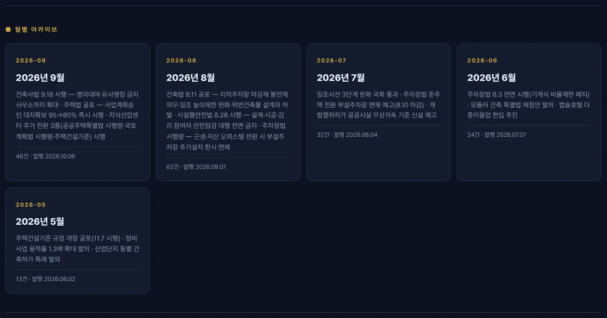
123- 1최신호
- 2호 번호
- 3머리기사
월호 머리
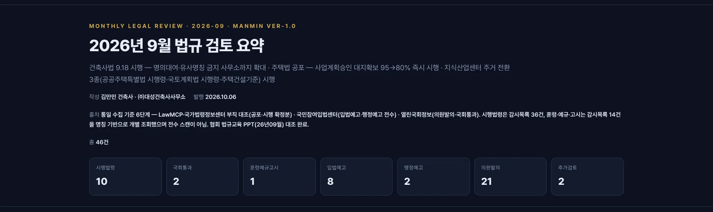
123456- 1호 번호 · 판
- 2호 제목
- 3머리기사
- 4발행일
- 5수집 출처
- 6단계별 건수
검색 · 필터 · 도구
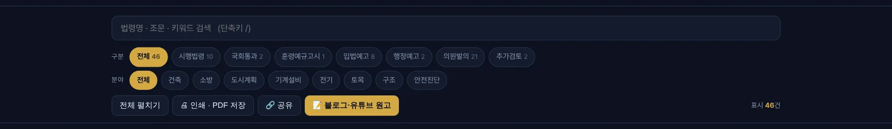
12345678- 1검색 (단축키 /)
- 2단계 필터
- 3분야 필터
- 4전체 펼치기
- 5인쇄 · PDF
- 6공유
- 7블로그 · 유튜브 원고
- 8표시 건수
| 도구 | 기능 |
|---|---|
| 검색 | 법령명 · 조문 · 키워드 (단축키 /) |
| 단계 필터 | 시행법령 · 국회통과 · 훈령예규고시 · 입법예고 · 행정예고 · 의원발의 · 추가검토 |
| 분야 필터 | 건축 · 구조 · 기계설비 · 소방 · 토목 등 — 단계 필터와 함께 걸림 |
| 전체 펼치기 | 모든 카드의 「세부 개정내용」을 한 번에 펼침 · 접기 |
| 인쇄 · PDF 저장 | 브라우저 인쇄 — 「PDF로 저장」 선택 |
| 블로그 · 유튜브 원고 | 현재 필터에 보이는 항목만 원고로 추출 |
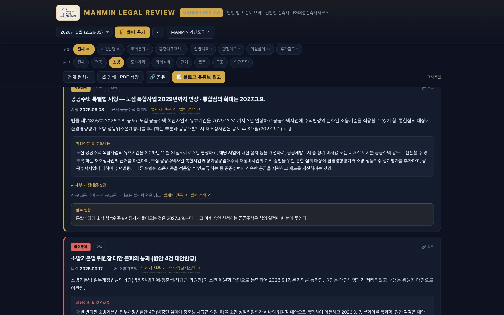
12- 1분야 = 소방
- 2표시 건수
항목 카드
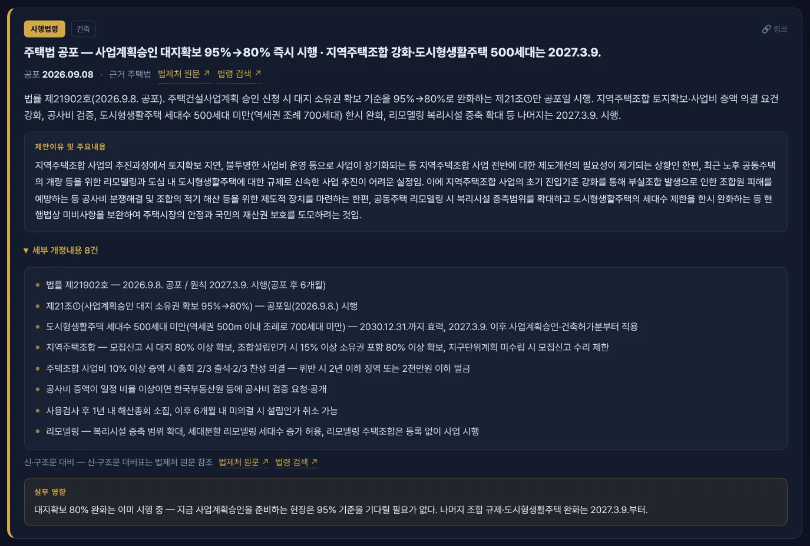
123456789- 1단계
- 2분야
- 3날짜 · 근거 · 원문
- 4요약 — 번호 · 공포 · 시행
- 5제안이유 및 주요내용
- 6세부 개정내용
- 7신 · 구조문 대비
- 8실무 영향
- 9항목 링크 복사
예고 항목과 D-day
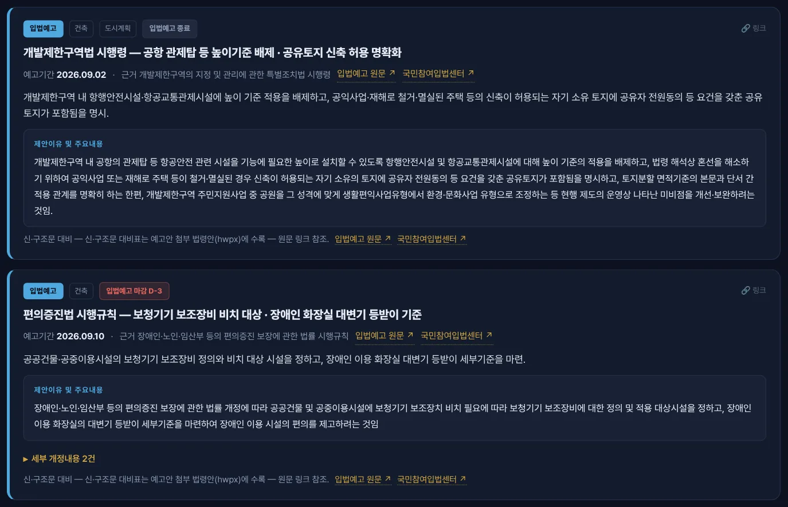
123- 1입법예고
- 2마감 · 종료 표시
- 3입법예고 원문
블로그 · 유튜브 원고
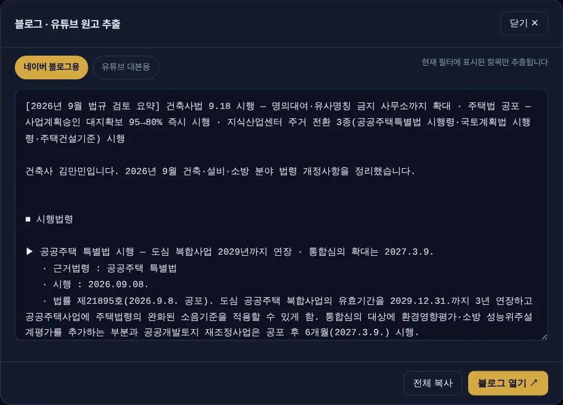
1234- 1네이버 블로그용
- 2유튜브 대본용
- 3원고
- 4전체 복사
보이는 항목만 추출되므로, 예를 들어 「소방」 필터를 건 뒤 원고를 열면 소방 항목만으로 원고가 만들어집니다.
인쇄 · 밝은 화면
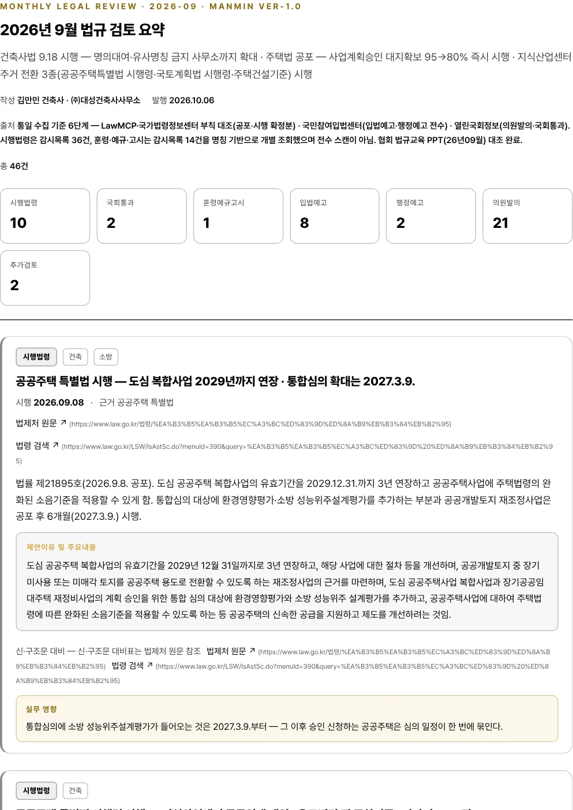
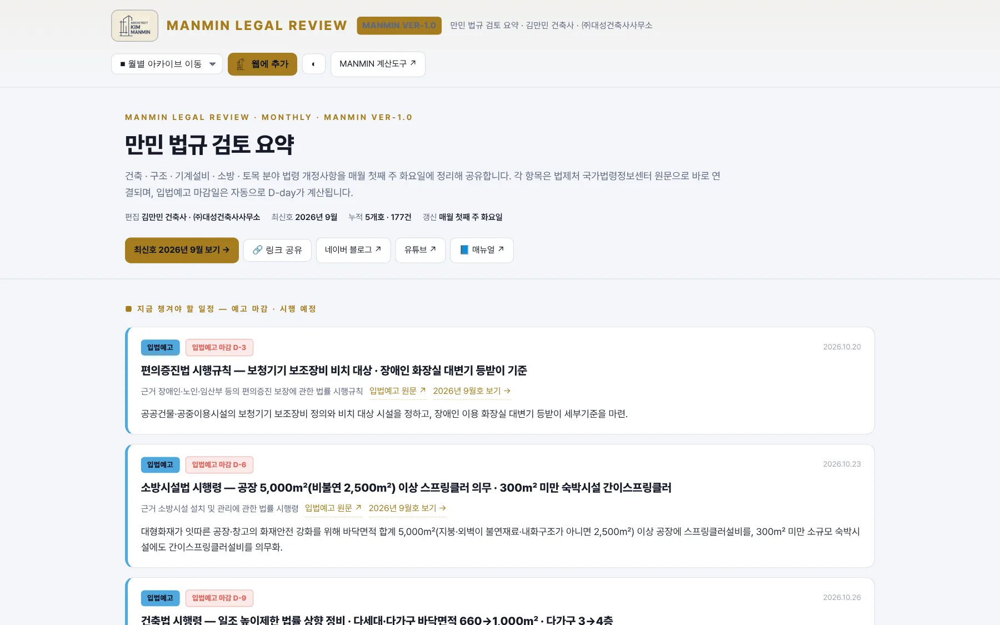
휴대전화 · 앱 설치
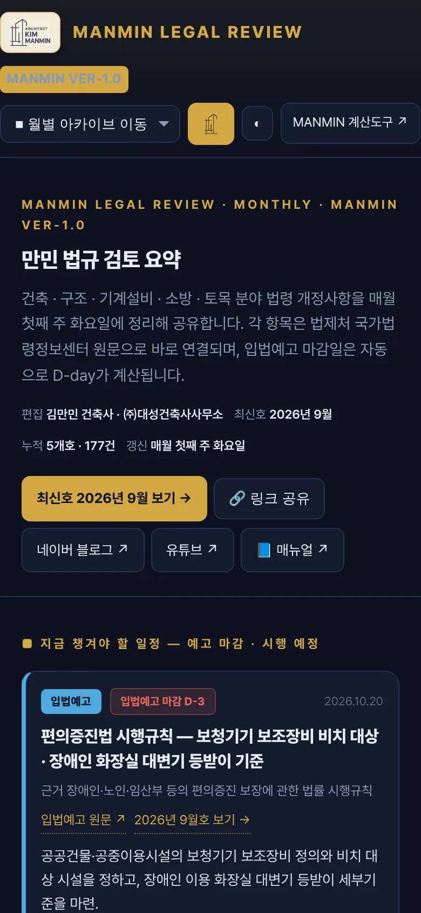
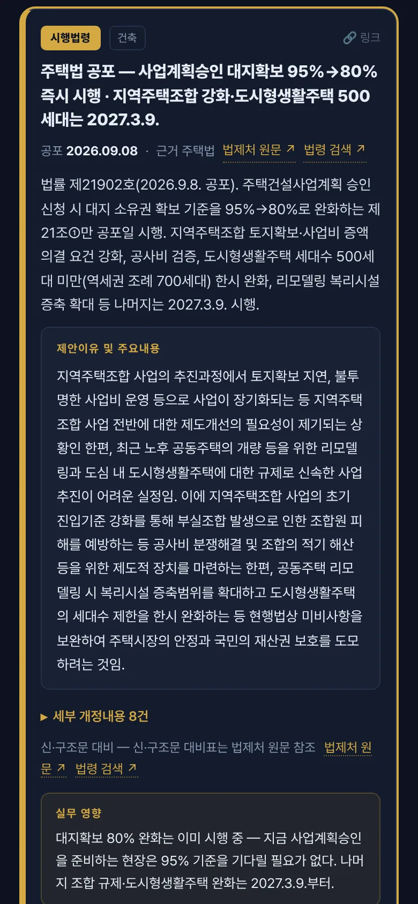
「웹에 추가」를 누르면 주소창 없는 독립 창으로 설치됩니다(PWA). 설치한 앱의 바로가기 「최신호 보기」는 매월 발간 때 최신호로 자동 갱신됩니다(v1.2).
04항목 읽는 법
카드 구성
| 구성 | 담는 내용 | 9월호 i03 예 |
|---|---|---|
| 단계 · 분야 태그 | 어느 단계의 무엇인가 | 시행법령 · 건축 |
| 제목 | 핵심 변경을 한 줄로 | 주택법 공포 — 사업계획승인 대지확보 95%→80% 즉시 시행 · 지역주택조합 강화·도시형생활주택 500세대는 2027.3.9. |
| 날짜 · 근거 | 공포 / 시행 / 예고기간 · 근거 법령 · 원문 | 공포 2026-09-08 · 주택법 |
| 요약 | 법령 번호 · 공포일 · 시행일 · 주요 수치 | 법률 제21902호(2026.9.8. 공포) |
| 제안이유 및 주요내용 | 정부 · 발의자의 공식 사유 (원문 그대로) | — |
| 세부 개정내용 | 조문별 시행일 · 부칙 경과조치 | 8건 |
| 신 · 구조문 대비 | 법제처 원문 · 법령 검색 연결 | — |
| 실무 영향 | 설계 · 인허가 · 감리에서 달라지는 점 (편집자 의견) | 대지확보 80% 완화는 이미 시행 중 — 지금 사업계획승인을 준비하는 현장은 95% 기준을 기다릴 필요가 없… |
| 링크 | 항목 주소 복사 — 동료에게 그 항목만 공유 | #i03 |
날짜 표기
| 표기 | 뜻 | 쓰는 단계 |
|---|---|---|
| 시행 | 그날부터 적용 | 시행법령 |
| 공포 | 공포만 되고 시행일은 따로 — 요약 · 세부에서 시행일 확인 | 시행법령 |
| 발령 | 고시 · 훈령 · 예규 발령일 | 훈령예규고시 |
| 의결 | 국회 본회의 의결일 | 국회통과 |
| 예고기간 | 예고 시작일 · 마감일 | 입법예고 · 행정예고 |
| 발의 | 법률안 발의일 | 의원발의 |
D-day 규칙
| 상태 | 표시 | 실무 |
|---|---|---|
| 예고 마감 11일 이상 | 「입법예고 마감 D-n」 회색 | 여유 있음 |
| 예고 마감 10일 이내 | 「입법예고 마감 D-n」 강조 | 의견 제출 준비 |
| 마감 당일 | 「마감 D-DAY」 | 당일 제출 |
| 마감 지남 | 「입법예고 종료」 | 다음 단계(공포) 대기 |
| 시행 예정 | 「시행 D-n」 녹색 | 시행 전 준비 |
D-day는 페이지를 여는 날짜로 계산합니다. 같은 9월호라도 10월 초에 보면 「마감 D-9」, 마감 뒤에 보면 「종료」로 보입니다.
052026년 9월호 살펴보기
2026년 9월호는 2026-10-06(화)에 발간됐고 46건을 수록했습니다. 머리기사 — 건축사법 9.18 시행 — 명의대여·유사명칭 금지 사무소까지 확대 · 주택법 공포 — 사업계획승인 대지확보 95→80% 즉시 시행 · 지식산업센터 주거 전환 3종(공공주택특별법 시행령·국토계획법 시행령·주택건설기준) 시행
머리기사
| 단계 | 항목 | 날짜 |
|---|---|---|
| 시행법령 | 건축사법 시행 — 명의대여·유사명칭 금지 건축사사무소까지 확대 · 민간 대가기준 준용은 2027.3.18. | 시행 2026-09-18 |
| 시행법령 | 주택법 공포 — 사업계획승인 대지확보 95%→80% 즉시 시행 · 지역주택조합 강화·도시형생활주택 500세대는 2027.3.9. | 공포 2026-09-08 |
| 시행법령 | 공공주택 특별법 시행령 시행 — 지식산업센터 공공임대 매입 · 용도변경 전 주차기준 · 다자녀 3→2명 | 시행 2026-09-08 |
| 시행법령 | 국토계획법 시행령 시행 — 일반공업지역 지식산업센터·근생의 오피스텔 용도변경 한시 허용 (7월 예고 확정) | 시행 2026-09-08 |
| 시행법령 | 주택건설기준 규정 시행 — 지식산업센터→도시형생활주택 전환 시 기존 주차기준 · 주차·주민공동시설 완화 (7월 예고 확정) | 시행 2026-09-08 |
단계별 건수
| 단계 | 건수 | 내용 |
|---|---|---|
| 시행법령 | 10 | 공포 · 시행 확정 |
| 훈령예규고시 | 1 | 고시 발령 |
| 국회통과 | 2 | 본회의 의결 |
| 입법예고 | 8 | 정부안 예고 |
| 행정예고 | 2 | 고시안 예고 |
| 의원발의 | 21 | 법률안 발의 |
| 추가검토 | 2 | 7월 누락분 · 정책 묶음 |
| 합계 | 46 |
의견 제출 가능한 예고 (2026-10-17 기준)
| 단계 | 항목 | 마감 | 남은 날 |
|---|---|---|---|
| 입법예고 | 편의증진법 시행규칙 — 보청기기 보조장비 비치 대상 · 장애인 화장실 대변기 등받이 기준 | 2026-10-20 | D-3 |
| 입법예고 | 소방시설법 시행령 — 공장 5,000㎡(비불연 2,500㎡) 이상 스프링클러 의무 · 300㎡ 미만 숙박시설 간이스프링클러 | 2026-10-23 | D-6 |
| 입법예고 | 건축법 시행령 — 일조 높이제한 법률 상향 정비 · 다세대·다가구 바닥면적 660→1,000㎡ · 다가구 3→4층 | 2026-10-26 | D-9 |
| 입법예고 | 주택법 시행령 — 주택조합 원거주민 조합원 예외 · 자금 공개 강화 · 사업종결 재의결 | 2026-10-26 | D-9 |
| 입법예고 | 주택법 시행령 — 상업·준주거 주상복합 건축허가 대상 300→500세대 미만 · 연면적 90→100% 미만 (2030년까지) | 2026-10-28 | D-11 |
| 입법예고 | 주택법 시행규칙 — 1,000세대 이상 사전방문 3일 이상 권고 · 주말 1일 포함 · 품질점검 대상 1% 이상 | 2026-11-02 | D-16 |
| 입법예고 | 특정건축물 정리법 시행령 제정 — 소규모 주거용 위반건축물 한시 사용승인 (12.17. 법 시행 대비) | 2026-11-09 | D-23 |
06실무 활용
매월 확인 순서
- 첫째 화요일 — 최신호 열기첫 화면 「최신호 보기」 또는 설치한 앱의 「최신호」 바로가기.
- 확정분 먼저단계 필터 「시행법령」 · 「훈령예규고시」 → 진행 중인 설계 · 인허가 · 감리 현장에 걸리는지 확인. 시행일과 경과조치(부칙)는 원문으로 대조.
- 내 분야만분야 필터(건축 · 소방 · 기계설비 …)로 좁혀 놓고 「전체 펼치기」.
- 임박 일정첫 화면 「지금 챙겨야 할 일정」에서 예고 마감 · 시행 예정 확인 → 필요하면 의견 제출.
- 공유 · 보관항목 「링크」로 동료에게 해당 항목만 공유, 「인쇄 · PDF 저장」으로 현장 서류에 첨부.
자주 묻는 질문
| 질문 | 답 |
|---|---|
| 발간일에 열었는데 지난달 호가 최신호입니다 | 발간은 첫째 화요일 중에 반영됩니다. 앱 화면이 예전 내용이면 새로 고침하거나 앱을 다시 엽니다(HTML은 네트워크 우선으로 받습니다). |
| 항목 날짜와 법제처 현행 화면의 번호가 다릅니다 | 같은 날 · 같은 달에 개정이 겹치면 현행 화면 머리에는 나중 시행분이 보입니다. 국가법령정보센터 「연혁」에서 해당 번호를 찾습니다(2장 확인 방법). |
| 의원발의 항목도 지켜야 하나요 | 아니요. 의원발의는 국회 심사 전 단계로 확정이 아닙니다. 방향 참고용이며, 통과되면 「국회통과」 → 「시행법령」으로 다시 실립니다. |
| 예고가 「종료」로 바뀌었습니다 | 의견 제출 기간이 끝났다는 뜻입니다. 공포되면 이후 호 「시행법령」에 실립니다. |
| 지난 호를 보려면 | 첫 화면 「월별 아카이브」 또는 머리 막대의 호 선택 목록. |
| 블로그 원고에 일부 항목만 넣고 싶습니다 | 단계 · 분야 필터나 검색으로 원하는 항목만 남긴 뒤 원고를 엽니다. |
부록발간 이력 · 절차 · 용어
발간 이력
| 호 | 발간일 | 건수 | 단계별 |
|---|---|---|---|
| 2026년 9월호 | 2026-10-06 | 46 | 시행법령 10 · 훈령예규고시 1 · 국회통과 2 · 입법예고 8 · 행정예고 2 · 의원발의 21 · 추가검토 2 |
| 2026년 8월호 | 2026-09-01 | 62 | 시행법령 15 · 국회통과 6 · 입법예고 5 · 행정예고 5 · 의원발의 30 · 추가검토 1 |
| 2026년 7월호 | 2026-08-04 | 32 | 시행법령 3 · 훈령예규고시 1 · 국회통과 1 · 입법예고 14 · 행정예고 2 · 의원발의 9 · 추가검토 2 |
| 2026년 6월호 | 2026-07-07 | 24 | 시행법령 1 · 입법예고 1 · 의원발의 21 · 추가검토 1 |
| 2026년 5월호 | 2026-06-02 | 13 | 시행법령 2 · 입법예고 1 · 의원발의 9 · 추가검토 1 |
| 누적 | 177 | 5개호 |
2025-09 · 2025-10 · 2025-12 · 2026-01 네 개 호(협회 법규교육 자료 기반)는 수집 기준이 달라 사이트에 싣지 않고 보관만 합니다.
발간 절차 (편집)
| 단계 | 명령 | 내용 |
|---|---|---|
| ① 수집 | python publish.py collect | 입법예고 · 행정예고 · 의원발의 · 국회통과 자동 수집 → 초안 |
| ② 작성 | 사람 | 실을 항목 선택 · 요약 · 제안이유 · 실무 영향 작성 · 공포 · 시행 확정분은 법령정보로 대조해 추가 |
| ③ 점검 | python publish.py check | 빈 제안이유 · 수집 실패 단계 · 발간일 규칙 위반이면 발간 차단 |
| ④ 발간 | python publish.py release --push | 점검 → 빌드(첫 화면 · 월호 · 앱 바로가기 갱신) → 커밋 → 게시 |
용어
| 용어 | 뜻 |
|---|---|
| 공포 | 법령을 관보에 게재해 알리는 것 — 시행과 다를 수 있음 |
| 시행 | 법령의 효력이 실제로 생기는 날 |
| 부칙 | 시행일 · 경과조치 · 적용례를 정한 조항 |
| 입법예고 | 정부가 법령안을 미리 알리고 의견을 받는 절차 |
| 행정예고 | 고시 · 지침 등 행정규칙안을 미리 알리는 절차 |
| 타법개정 | 다른 법령의 제정 · 개정에 따라 함께 바뀌는 개정 |
| PWA | 웹을 앱처럼 설치해 쓰는 방식 — 「웹에 추가」 |
매뉴얼 변경 내역
| 판 | 날짜 | 내용 |
|---|---|---|
| Ver-1.0 | 2026-10-17 | 초판 — 첫 화면 「📘 매뉴얼」 단추 신설과 함께 발행 (사이트 서비스워커 v1.2) |